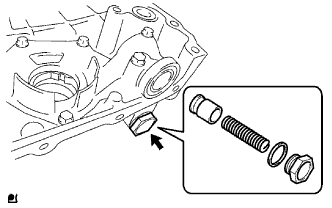
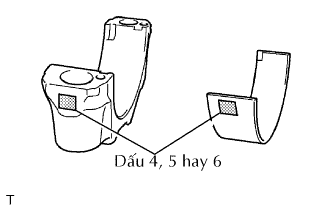

ĐỘNG CƠ > THÁO RỜI |
| 1. THÁO NẮP LỖ ĐỔ DẦU |
| 2. THÁO VAN THÔNG HƠI |
| 3. THÁO NẮP ĐẬY NẮP QUY LÁT |
Tháo 19 bulông, 2 đai ốc, nắp đậy nắp quy lát và 2 gioăng.
| 4. THÁO PULI TRỤC KHUỶU |
Quay puli trục khuỷu và gióng thẳng rãnh của nó với dấu thời điểm đánh lửa O trên nắp xích cam.
Kiểm tra rằng các dấu phối khí của bánh răng trục cam và đĩa răng đã được gióng thẳng với các dấu phối khí của nắp bạc No.1, như được chỉ ra trên hình vẽ.
Dùng SST, giữ puli trục khuỷu và tháo bu lông bắt puli.
Dùng bu lông bắt và SST, tháo bulông bắt puli và puli.
| 5. THÁO CÁCTE DẦU SỐ 2 |
Tháo nút xả và gioăng.
Thao 20 bu lông và 2 đai ốc.
Cắm lưỡi của SST vào giữa các cácte dầu. Hãy cắt toàn bộ keo làm kín và tháo cácte dầu.
| 6. THÁO LƯỚI LỌC DẦU |
Tháo bulông, 2 đai ốc, lưới lọc dầu và gioăng.
| 7. THÁO CÁCTE DẦU SỐ 1 |
Tháo 16 bulông và 2 đai ốc.
Tháo cácte dầu bằng cách nậy vào giữa cácte dầu và thân máy bằng một tô vít.
Tháo gioăng chữ O.
| 8. THÁO NẮP XÍCH CAM |
Tháo 19 bulông và 2 đai ốc như chỉ ra trên hình vẽ.
Tháo các nắp xích cam bằng cách nạy vào giữa nắp xích cam và nắp quy lát hay thân máy bằng một tô vít.
Tháo 3 gioăng chữ O.
Dùng một đầu lục giác 10 mm, tháo nút của nắp đậy xích cam.
| 9. THÁO BƠM NƯỚC |
 |
Tháo 8 bulông, bơm nước và gioăng.
| 10. THÁO PHỚT DẦU NẮP XÍCH CAM |
 |
Dùng một tô vít có bọc băng dính ở đầu, nạy phớt dầu ra.
| 11. THÁO VAN AN TOÀN CỦA BƠM DẦU |
|  |
Dùng đầu khẩu 27 mm, tháo nút và gioăng.
Tháo lò xo và van an toàn.
| 12. THÁO DẪN HƯỚNG XÍCH CAM |
Tháo 2 bulông, dẫn hướng xích cam và gioăng chữ O.
| 13. THÁO BỘ CĂNG XÍCH CAM |
Đẩy tấm hãm lên trên để nhả khoá và ấn píttông vào trong bộ căng xích.
Đẩy tấm hãm xuống dưới để đặt chế độ khoá và cắm một chìa lục giác 1.27 mm vào lỗ của tấm hãm.
Tháo bulông, đai ốc, bộ căng xích và gioăng.
| 14. THÁO RAY TRƯỢT BỘ CĂNG XÍCH |
Tháo bulông và ray trượt bộ căng xích.
| 15. THÁO GIẢM CHẤN |
Tháo 2 bu lông và giảm rung xích.
| 16. THÁO XÍCH CAM |
| 17. THÁO ĐĨA XÍCH TRÊN TRỤC KHUỶU |
| 18. THÁO ĐĨA TÍN HIỆU CẢM BIẾN VỊ TRÍ TRỤC KHUỶU |
| 19. THÁO THEN BẮT PULI TRỤC KHUỶU |
Tháo 2 then bắt puli ra khỏi trục khuỷu.
| 20. THÁO LỖ DẦU |
Tháo bulông, lỗ dầu và gioăng.
| 21. THÁO TRỤC CAM |
Nới lỏng đều tay 21 bulông nắp bạc qua một vài lần theo thứ tự như trong hình vẽ. Sau đó tháo ống phân phối dầu, gioăng chữ O và 9 nắp bạc.
Tháo 9 nắp bạc, ống phân phối dầu, gioăng chữ O và 2 trục cam.
| 22. THÁO ĐĨA XÍCH PHỐI KHÍ TRỤC CAM |
 |
Cố định trục cam trên êtô và sau đó tháo bulông đĩa xích và đĩa xích phối khí trục cam.
| 23. THÁO BÁNH RĂNG PHỐI KHÍ TRỤC CAM |
Tháo bulông có gờ và bánh răng phối khí trục cam.
| 24. THÁO NẮP QUY LÁT |
Dùng cơ lê 12 cạnh 10 mm, nới lỏng đều tay 10 bulông qua một vài lần theo thứ tự như trong hình vẽ. Hãy tháo 10 bulông nắp quy lát và các đệm phẳng.
Tháo nắp quy lát và gioăng.
| 25. THÁO LỌC DẦU |
Dùng SST, tháo bộ lọc dầu.
| 26. THÁO CÚT NỐI CỦA LỌC DẦU |
Dùng đầu khẩu 27 mm, tháo cút nối lọc dầu.
| 27. THÁO GIÁ BẮT LỌC DẦU |
Tháo bu lông nối giá bắt lọc dầu, gioăng và cút nối lọc dầu.
Tháo giá bắt lọc dầu và gioăng chữ O.
Tháo gioăng chữ O ra khỏi bu lông nối giá bắt lọc dầu.
| 28. THÁO TẤM CHẮN PHỚT DẦU PHÍA SAU ĐỘNG CƠ |
Tháo 6 bulông.
Dùng một tô vít có bọc băng dính ở đầu, nạy tấm hãm phớt dầu ra.
| 29. THÁO CÒ MỔ XUPÁP |
| 30. THÁO NẮP THÂN XUPÁP |
| 31. THÁO BỘ ĐIỀU CHỈNH KHE HỞ XUPÁP |
| 32. THÁO XUPÁP NẠP |
 |
Dùng SST và các cục gỗ chèn, nén lò xo và tháo các móng hãm xupáp.
Tháo móng hãm, lò xo nén, xupáp, lò xo xupáp và đế lò xo.
| 33. THÁO XUPÁP XẢ |
Dùng SST và các cục gỗ chèn, nén lò xo và tháo các móng hãm xupáp.
Tháo móng hãm, lò xo nén, xupáp, lò xo xupáp và đế lò xo.
| 34. THÁO PHỚT DẦU THÂN XUPÁP |
Dùng kìm mỏ nhọn, tháo phớt dầu.
| 35. THÁO BỘ LỌC CỦA VAN ĐIỀU KHIỂN DẦU |
Dùng chìa vặn lục giác 8 mm, tháo nút vít.
Tháo bộ lọc van điều khiển dầu và gioăng.
| 36. THÁO NÚT VÍT NO.1 |
Dùng chìa vặn lục giác 10 mm, tháo 3 nút vít.
| 37. THÁO NÚT VÍT NO.2 |
Dùng chìa vặn lục giác 9 mm, tháo nút vít.
| 38. KIỂM TRA KHE HỞ DỌC TRỤC THANH TRUYỀN |
Dùng đồng hồ so, đo khe hở dọc trục trong khi dịch chuyển thanh truyền ra trước sau.
| 39. KIỂM TRA KHE HỞ DẦU CỦA THANH TRUYỀN |
Kiểm tra rằng các dấu ghi nhớ trên thanh truyền và nắp bạc đã thẳng hàng để đảm bảo việc lắp lại chính xác.
Tháo 2 bulông bắt nắp thanh truyền.
Dùng 2 bulông nắp thanh truyền đã được tháo ra, tháo nắp thanh truyền và bạc phía dưới bằng cách lắc nắp thanh truyền sang trái và phải.
Lau sạch chốt khuỷu (cổ biên) và bạc.
Kiểm tra cổ biên và bạc xem có bị rỗ hoặc xước không?
Đặt một đoạn dây nhựa lên cổ biên
 |
Lắp nắp thanh truyền.
Khớp nắp thanh truyền đã đánh dấu với thanh truyền
Gióng thẳng các chốt của nắp thanh truyền với các lỗ chốt của thanh truyền, sau đó lắp nắp thanh truyền.
Kiểm tra rằng dấu phía trước của nắp thanh truyền đang quay về phía trước.
 |
Lắp các bulông nắp thanh truyền.
Bôi một lớp mỏng dầu động cơ lên các ren và phía dưới của các mũ của các bulông nắp thanh truyền.
Lắp và xiết chặt xen kẽ các bulông của nắp thanh truyền qua một vài lần.
Đánh dầu phía trước của các bulông nắp bạc thanh truyền bằng bút sơn.
Xiết các bulông nắp thanh truyền thêm 90° nữa như trên hình vẽ.
Kiểm tra rằng dấu sơn bây giờ đã quay đi một góc 90° so với vị trí phía trước.
Tháo 2 bulông và nắp thanh truyền.
 |
Đo dây nhựa tại điểm rộng nhất.
| Dấu | Điều kiện tiêu chuẩn |
| 4 | 1.484 đến 1.487 mm (0.0584 đến 0.0585 in.) |
| 5 | 1.488 đến 1.490 mm (0.0586 đến 0.0587 in.) |
| 6 | 1.491 đến 1.493 mm (0.0587 đến 0.0588 in.) |
Bóc toàn bộ dây nhựa.
| 40. THÁO PÍTTÔNG CÙNG VỚI THANH TRUYỀN |
Dùng một mũi doa, làm sạch tất cả các muội than ra khỏi đỉnh của píttông.
Aán pít tông, cụm thanh truyền và bạc phía trên vào qua đỉnh của thân máy.
| 41. KIỂM TRA KHE HỞ DỌC TRỤC TRỤC KHUỶU |
Dùng đồng hồ so, đo khe hở dọc trục trong khi nạy trục khuỷu dọc trục bằng tô vít.
| 42. KIỂM TRA KHE HỞ DẦU CỦA TRỤC KHUỶU |
Nới lỏng đều tay 10 bulông nắp bạc qua một vài lần theo thứ tự như trong hình vẽ.
Tháo 10 nắp bạc.
Làm sạch các cổ khuỷu và bạc.
Kiểm tra từng cổ khuỷu và bạc xem có vết rỗ hoặc vết xước không?.
Nếu cổ trục hoặc bạc bị hư hỏng, hãy thay bạc. Nếu cần, gia công lại trục khuỷu.
Đặt trục khuỷu trên thân máy.
Hãy đặt một đoạn dây nhựa lên mỗi cổ trục.
 |
Lắp 5 nắp bạc trục khuỷu vào đúng vị trí của chúng.
 |
Lắp các bulông nắp bạc trục khuỷu.
Lắp và xiết chặt đều tay 10 bulông bắt nắp bạc chính theo thứ tự như trong hình vẽ.
Đánh dấu phía trước của các bulông nắp bạc bằng bút sơn.
Xiết chặt các bulông nắp bạc 90° theo thứ tự được đánh số ở trên.
Kiểm tra rằng dấu sơn bây giờ đã quay đi một góc 90° so với vị trí phía trước.
Tháo 10 bulông và 5 nắp bạc trục khuỷu ra theo đúng thứ tự như khi tháo chúng ra ở trên.
Đo dây nhựa tại điểm rộng nhất.
| Hạng mục | Điều kiện tiêu chuẩn |
| Cổ trục No.3 | 0.030 đến 0.055 mm (0.0012 đến 0.0022 in.) |
| Các cổ trục khác | 0.024 đến 0.049 mm (0.0009 đến 0.0019 in.) |
| Dấu | Điều kiện tiêu chuẩn |
| 1 | 64.004 đến 64.010 mm (2.5198 đến 2.5201 in.) |
| 2 | 64.011 đến 64.016 mm (2.5201 đến 2.5203 in.) |
| 3 | 64.017 đến 64.022 mm (2.5203 đến 2.5206 in.) |
| Dấu | Điều kiện tiêu chuẩn |
| 1 | 1.987 đến 1.990 mm (0.0782 đến 0.0783 in.) |
| 2 | 1.990 đến 1.993 mm (0.0783 đến 0.0785 in.) |
| 3 | 1.993 đến 1.996 mm (0.0785 đến 0.0786 in.) |
Bóc toàn bộ dây nhựa.
| 43. THÁO TRỤC KHUỶU |
Nhấc trục khuỷu lên.
Tháo các bạc phía trên và các vòng đệm dọc trục phía trên ra khỏi thân máy.
| 44. THÁO PÍTTÔNG CÙNG VỚI CHỐT |
 |
Kiểm tra tình trạng lắp giữa píttông và chốt píttông.
Thử dịch chuyển píttông ra phía trước và sau ở chốt píttông.
Nếu có độ rơ, hãy thay thế cả bộ píttông và chốt.
Tháo các xéc măng.
Dùng dụng cụ tháo xéc măng, tháo hai xéc măng hơi.
Tháo vành gạt và vành căng xéc măng dầu.
 |
Tháo thanh truyền ra khỏi píttông.
Dùng một tô vít nhỏ, nạy phanh hãm ra khỏi píttông.
Nung nóng dần dần píttông đến nhiệt độ xấp xỉ 80 đến 90°C (176 đến 194°F).
Dùng một thanh đồng và búa nhựa, đóng nhẹ lên chốt píttông và tháo thanh truyền.
| 45. THÁO VÒI XẢ NƯỚC TRÊN THÂN MÁY |
| 46. THÁO VÒI DẦU |
Dùng chìa vặn lục giác 5 mm, tháo vòi dầu.